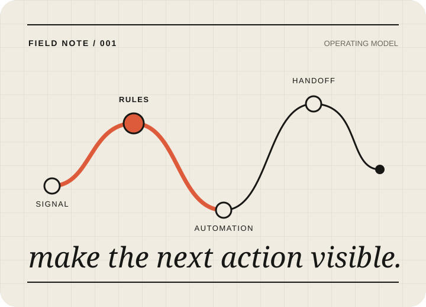

I turn operational noise into systems people can trust.
AI Automation Specialist · Digital Transformation Officer
I map the messy path behind a spreadsheet, inbox, or handoff, then build the smallest safe system that makes the next action visible. My work sits between process design, automation, and internal software.
Public walkthroughs use synthetic data and show the mechanism. Production access, metrics, and CV PDF are available only when owner-approved.
FIELD NOTE 001 / 004

01ObserveFind the friction in the real workflow.
02MapMake decisions, owners, and exceptions explicit.
03AutomateRemove repetitive work with safe defaults.
04HandoverLeave a system someone else can operate.
Selected work / 04 systems
Proof before promises.
Four workflow studies show how I think: start with an operational constraint, make the control point visible, and label exactly what the public artifact can prove.
Flagship system / public, read-only walkthrough / synthetic data
01 / flagship · Corgi77
Corgi77 Registration
L&D event platform · capacity-safe booking
A shared-sheet booking flow became a reusable event platform. Eligibility and capacity are checked in the write path, while the operator gets a traceable path from setup to confirmation.
The deliverable is not only a working automation. It is a visible decision model that a team can inspect, operate, and improve.
01
Observe
Trace the happy path, the spreadsheet edge cases, and the person who owns the exception.
02
Model
Turn handoffs into states, rules, and data boundaries before selecting a tool.
03
Ship
Prefer small, testable changes with validation, idempotency, and useful failure states.
04
Handover
Document what happens next, who can approve it, and what the evidence still cannot claim.
A builder who notices the handoff.
I am a fresher based in Ho Chi Minh City, looking for a team where process improvement and software delivery belong in the same conversation. I bring a practical bias toward observable workflows, careful access boundaries, and writing that makes systems easier to trust.